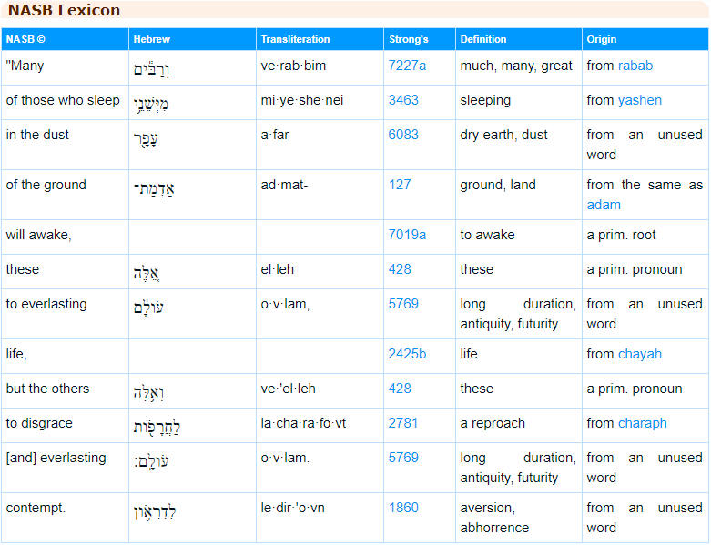

Is “hell” Biblical? The “Eternal” Question
By now we have seen that the salvation of all people is deeply biblical and found throughout Scripture. We’ve also seen that “hell” isn’t really a proper translation of Gehenna, Tartaros, Sheol or Hades. But there is still a problem that hasn’t been addressed, and if we only read the English translations of the Bible, it is huge. Here it is below, in reference to the parable of the sheep and the goats:
Matthew 25:46
“Then they will go away to eternal punishment, but the righteous to eternal life.”
Well, there you have it. All this great evidence we’ve been discussing from all throughout the Bible contradicted in a single statement, really in a single word: eternal. This same word and related forms of it are also translated as “forever and ever” and “everlasting.” I guess I never should have begun writing this… if only I’d read Matthew 25:46, I could have saved myself a lot of time…
I am, of course, being facetious. Of course I’ve read those passages. They are the only reason that the doctrine of hell seemed immovable, the reason I felt trapped in a faith that was supposed to be freeing. There seemed to be no way out…
But I have realized something recently (I think with God's help). You may recall that we discussed the fact that Satan uses Scripture to deceive us when he takes it out of context and twists it to mean something other than its true meaning, and that he used the same tactic to try to tempt Jesus in the desert. The reason I bring this up is that we’ve been looking at the context of the entire Bible, and this concept of eternal torment just isn’t consistent with this overall context.
What do we say then? Does the Bible contradict itself?
The answer is NO! But how is this possible?
It turns out that the answer comes down once again to translation.
But before we delve into the problems with the translations of our Bibles, I want you to notice something critical. The entire doctrine of hell as a place of everlasting punishment rests on the translation of one word in the New Testament (and its derivative forms).
So, if the word is translated incorrectly, the doctrine of hell is doomed!
Don’t you see it? Think about it if you don’t.
Now let’s get into it.
First, let’s begin with the verse that I used to open the chapter, Matthew 25:46:
“Then they will go away to eternal punishment, but the righteous to eternal life.”
There’s a really remarkable thing that we can do now in the information age: find information! It is readily available and incredibly easy to find if you really look for it. In the past we had to take the “experts” word for it. No longer. You can see the original Greek for any passage in the Bible online. Here is Matthew 25:46 (by the way you can click on any of these lexicon images to make them larger or just visit them by clicking the hyperlinks below the images):

Retrieved from BibleHub.com
Notice that the definition can be agelong or eternal according to the lexicon. So it does NOT necessarily mean eternal, and can mean an undefined agelong span of time.
Also, notice the meaning of the term translated “punishment” in the NASB version. The Greek is Κόλασιν (kolasin) which means “correction”! The word “correction” clearly implies the type of discipline that leads to repentance and correct behavior. It has a very different sense than mere punishment (which may or may not be purposeful). There is a clear purpose to correction: restoration! Doesn’t it sound absurd to translate the text as “eternal correction?” But since there was a bias toward the doctrine of hell (and its eternal nature) in the translation, “punishment” was chosen.
Now let’s go a bit deeper by looking at some more verses.
Revelation 14:11 (ESV)
And the smoke of their torment goes up forever and ever, and they have no rest, day or night, these worshipers of the beast and its image, and whoever receives the mark of its name.”
Let’s look at the actual words translated “forever and ever”:
{kind=link}
(retrieved from (BibleHub.com)
Notice that both of these words have the same root, aión (αἰῶν). Aión is the noun from which the adjective aiónios is derived. Notice too that the proper meaning of aión is “a space of time, an age.” The Greek words aiōnas and aiōnōn are plural forms of aión and would therefore properly be translated as "ages" or "spaces of time." A “space of time” or an “age” do not necessarily mean (and usually don't mean) “forever.” The literal and most accurate translation of the phrase aiōnas aiōnōn is "ages of ages." Although the preposition "of" does not appear as a separate word in the Greek, it would be understood because aiōnōn is in the genitive case, which indicates possession.
It is apparent that the English phrase "forever and ever" does not accurately portray the meaning of the Greek. There are several important observations that should make this clear:
1. It inserts the conjunction "and" where it is not actually found. Instead, the preposition "of" should have been used to indicate possession as mandated by the fact that aiōnōn is in the genitive case. In Greek, the word kai (και) means "and" but kai is not present in the phrase.
2. Both aiōnas and aiōnōn are nouns. "Forever" and "ever" are both adverbs. Nouns and adverbs are different parts of speech with completely different functions. It is not good translation practice to replace nouns with adverbs for this reason.
3. Both aiōnas and aiōnōn are plural forms of aiōn. Since aiōn means "age," they can only be rightly translated as "ages." There is no plural form of "forever" or "ever."
It is therefore undeniable that the translation of aiōnas aiōnōn as "forever and ever" is neither a literal translation, nor an accurate one. It does not capture the original meaning of the words at all. The phrase "ages of ages" however, is not commonly used in everyday English, so there may be some question as to its meaning. I believe that the most straightforward reading of its meaning can be understood by considering the following truths:
1. Time consists of a series of ages, as the Bible describes.
2. Ages are timespans of undefined lengths.
3. Each person will be rewarded or punished according to what they have done (Matthew 16:27, Romans 2:6, 2 Corinthians 5:10, Revelation 20:12, Isaiah 59:18, Psalm 62:12 etc.).
Based off of these three understandings, I propose that the best understanding of the phrase aiōnas aiōnōn is that those who are in the lake of fire will experience their punishment for the appropriate number of ages out of the total number of ages that comprise the rest of time, until the end (at which point all will be united in Christ as stated in Ephesians 1:9-10). Each person will receive the appropriate duration of corrective punishment that corresponds to their life's actions. But once a person repents, entrance into God's kingdom becomes possible. Consider the following statement in Revelation, remembering that it is made after the judgment of the lake of fire in regards to those who are not yet a part of the New Jerusalem that has descended from heaven:
Revelation 22:14 (ESV)
Blessed are those who wash their robes, so that they may have the right to the tree of life and that they may enter the city by the gates.
The robes are washed in the blood of the Lamb (as stated in Revelation 7:14), symbolizing the sanctification provided by Christ's atoning sacrifice for the sins of the whole world (1 John 2:2). Remember that this statement is made after the great white throne judgment of Revelation 20, after the new Jerusalem has come "down out of heaven from God" with its perpetually open gates (Revelation 21), and that those outside the gates are the wicked (Revelation 22:15). These wicked are those who are invited in, but they do not enter until they are no longer wicked, until the power of Christ's loving sacrifice and righteous judgment has transformed them from enemies to loyal subjects and friends.
The amount of time that this will take for different individuals does not need to be equal. Each person will experience judgment for a particular age, or number of ages that is necessary. The idea that time can be subdivided into periods of different duration is actually not even a foreign concept at all. We do this all the time. Centuries consist of decades, decades of years, years of days, days of hours and so on. The fact that I was alive in the 2oth century does not mean that I experienced all of the decades that comprised this time span. In fact, I was only around for two decades of the decades that comprise the 2oth century. This seems to be perfectly analogous to the Greek construction aiōnas aiōnōn (ages of ages).
Moreover, this concept is consistent with biblical views of justice, in which the sentence for a crime should match the crime's severity. The punishment for an impoverished Hindu orphan that did not understand (or even hear) the gospel should not match the punishment of a mass murderer. This is both biblically and intuitively obvious, and consistent with the many verses that explain that people will be judged according to their deeds.
Derivatives of Aiōn and Aiónios
We can see, therefore, that there are two primary words (and their derivations) that are used to argue for the eternality of punishment: the noun aión, and the adjective aiónios. Now, let's look at both of these as described in two respected sources. You can find these here: BibleHub.com
Strong's Concordance
aiónios: agelong, eternal
Original Word: αἰώνιος, ία, ιον
Part of Speech: Adjective
Transliteration: aiónios
Phonetic Spelling: (ahee-o'-nee-os)
Short Definition: eternal, unending
Definition: age-long, and therefore: practically eternal, unending; partaking of the character of that which lasts for an age, as contrasted with that which is brief and fleeting.
HELPS Word-studies
Cognate: 166 aiṓnios (an adjective, derived from 165/aiṓn ("an age, having a particular character and quality" ) – properly, "age-like" ("like-an-age"), i.e. an "age- characteristic" (the quality describing a particular age) ; (figuratively) the unique quality (reality) of God's life at work in the believer, i.e. as the Lord manifests His self-existent life (as it is in His sinless abode of heaven). "Eternal ( 166 /aiṓnios) life operates simultaneously outside of time, inside of time, and beyond time – i.e. what gives time its everlasting meaning for the believer through faith, yet is also time-independent. See 165 (aiōn).
[166 (aiṓnios) does not focus on the future per se, but rather on the quality of the age ( 165 /aiṓn) it relates to. Thus believers live in "eternal( 166 /aiṓnios) life" right now, experiencing this quality of God's life now as a present possession. (Note the Gk present tense of having eternal life in Jn 3:36, 5:24, 6:47; cf. Ro 6:23.)]
So the words translated to mean eternal, everlasting, or forever and ever are extraordinarily rich, and diverse in meaning. Now let’s add to the complexity of this word a bit more by seeing how Jesus’ defined it.
John 17:3 (NIV)
Now this is eternal (aiónios) life: that they know you, the only true God, and Jesus Christ, whom you have sent.
So now in the sense that Jesus used it, eternal life isn’t really about time at all but rather about knowing “the only true God and Jesus Christ.” Are you confused yet? There is complex meaning here. The words are nuanced and rich.
Is it really appropriate to insist that hell is a place of everlasting conscious torment based solely on such a word as aiónios?
I don’t believe that it is… and I don’t think you should either.
But since the translation of the words aion, aiónios, and aiónion are so critical to the argument for eternal punishment, let’s continue our examination of these words in both scriptural and extra-biblical Greek literature of the time period.
Uses of Aion and its Derivatives in Other Parts of the Bible
Colossians 1:25-29
Of this church I was made a minister according to the stewardship from God bestowed on me for your benefit, so that I might fully carry out the preaching of the word of God, that is, the mystery which has been hidden from the past ages (aiōnōn: plural form of aion) and generations, but has now been manifested to His saints, to whom God willed to make known what is the riches of the glory of this mystery among the Gentiles, which is Christ in you, the hope of glory. We proclaim Him, admonishing every man and teaching every man with all wisdom, so that we may present every man complete in Christ. For this purpose also I labor, striving according to His power, which mightily works within me.
Here we see the concept that multiple ages (aiōnōn) have already occurred (they are past). It is not possible to traverse an infinite span of time and saying that multiple infinite time spans have already passed is inane. This is why aiōnōn is translated as ages because “eternities” is clearly nonsensical, and because “ages” is what aiōnōn actually, literally means!
Galatians 1:3-4
Grace to you and peace from God our Father and the Lord Jesus Christ, who gave Himself for our sins so that He might rescue us from this present evil age (aion).
Does Christ rescue us from a present evil eternity? Again, aion is appropriately translated age because that is what it means!
Ephesians 1:21
“…in accordance with the working of the strength of His might which He brought about in Christ, when He raised Him from the dead and seated Him at His right hand in the heavenly places, far above all rule and authority and power and dominion, and every name that is named, not only in this age (aion) but also in the one to come.
Again we see the word aion appropriately translated as age. And in this example we see that there is not only a present aion but also a future aion that will come afterward. If the present aion were eternal, we could of course never get to the next aion, because the age we are in would last forever.
Titus 1:2
…in the hope of eternal life, which God, who cannot lie, promised long ages ago…
The phrase translated “long ages ago” is ‘pro chronōn aiōniōn.’ Here again we see that ages have already past. This doesn’t make sense if aiōniōn (a plural form of aiōnios) means “eternities.” An accurate translation would be something more like this: "before the times of the ages" because pro means "before," chronōn is a plural form of the noun time, and aiōniōn is the genitive masculine plural form of aionios. It cannot be rendered that this promise was made long eternities ago because it would be impossible to traverse multiple (or even one) eternity to arrive at the present.
So, it can be seen that in the New Testament, the terms aion and aionios are not consistently translated as eternal, nor do they have this connotation. In fact, translating the words as eternal does not make sense in a significant number of passages. If, however, you consistently translate aion and aionios as “age” and “age-like” or “age-long” in every passage they do make perfect sense!
In the Septuagint
As a reminder, the Septuagint was a Greek translation of the Hebrew Old Testament that was completed in the second century B.C. As such, it provides valuable insights into the Greek words that were used to translate Hebrew concepts near the lifetime of Christ. Consider the following examples in which the Hebrew word olam was translated as aion or aionios.
Isaiah 58:12
“Those from among you will rebuild the ancient (aionioi) ruins; you will raise up the age-old (aionia) foundations; and you will be called the repairer of the breach, the restorer of the streets in which to dwell.”
Here we see the words “ancient” and “age-old” being represented by aionios. Obviously, neither “ancient” nor “age-old” mean everlasting or eternal. In fact, the context of the verse prohibits such an interpretation. It is clear that the adjective aionios means that something pertains to an aion (age), in this case an age from long ago.
Isaiah 34:9-10
And the streams of Edom shall be turned into pitch,
and her soil into sulfur;
her land shall become burning pitch.
Night and day it shall not be quenched;
its smoke shall go up forever (αἰῶνα/aiōna)…
Is the smoke from Edom still rising? Can we go there and see it? I imagine such a sight would be quite noticeable, with smoke rising perpetually forever. An age-long period of smoke rising, however, seems reasonable.
Jonah 2:6
To the roots of the mountains I sank down;
the earth beneath barred me in forever (αἰώνιοι/ aionioi).
But you, Lord my God,
brought my life up from the pit.
Jonah is praying to God from inside the great fish that had swallowed him. Notice that the term aionios simply cannot mean forever in this context, for several reasons. First, we know that Jonah was only in the belly of the fish for 3 days, not forever. Second, the verse itself contradicts the notion of him being barred in forever, because it says that the LORD brought his “life up from the pit.”
Now, some will argue that Jonah was using the term figuratively because it felt like forever. But then it has to be admitted that the term can be used hyperbolically, which calls into question the interpretation that it must be literal when referring to “hell.” However, given the vast number of times that the term denotes a limited time span in the Bible and elsewhere in Greek literature, it is far more intellectually honest to admit that aionios simply doesn’t mean everlasting or forever or eternal. Indeed, in this passage and many others it cannot because interpreting it this way is obviously absurd.
There are many, many more examples to look at that show that aion and its derivatives do not mean everlasting in most cases. Anyway, in order to finish writing this before the end of this aion, I will point you once again to some great resources that can help you learn more about this. Here is a list of several verses (with commentary) in the Septuagint that show that “eternal” or “forever” are poor choices in translation of the Hebrew concept of olam: Septuagint: Part 2
1. Elpenor's Bilingual (Greek / English) Old Testament
( (ellopos.net)
This resource shows an English translation of the Septuagint side by side with the Greek. The main problem is that it does not tell you what each Greek word is translated to. But there is a solution. You can use the next tool to see what each Greek word means individually.
2. 2. The Septuagint (retrieved from http://greekdoc.com). Here you can highlight individual Greek words to see their translations in English and can even click on each word to find out more about them.
Now, let’s examine some uses in ancient extra-bibilical literature.
Uses of Aion and its Derivatives in Greek Literature and Other Sources
Finally, let’s examine uses of aion and it’s forms in other ancient Greek sources. This won’t be comprehensive but will clearly demonstrate the sense in which the ancient Greeks understood the words.
In Homer’s Iliad, the father of Hector pleads with his son to not go out in battle against Achilles, begging him to enter the walls lest he “be deprived of pleasant aionos (life),” (Iliad 22, 58). From the context, it is clear that the word means “life.” Indeed this was a common way to use the word aion in ancient Greek literature.
Euripedes, Orestes, lines 971-981
“Oh, oh! you tribes of short-lived men, full of tears, full of suffering, see how fate runs counter to your hopes! All receive in turn their different troubles in length of time; and the whole of mortal life (aión) is uncertain.” (retrieved from http://www.perseus.tufts.edu)
Notice that the character Electra is clearly referring to life of limited duration, calling it “mortal.” The word aion does not denote eternity, but in this case is as short as the uncertain length of a lifespan.
Both of the above are from several hundred years before Christ, so it could be argued that the meaning of the word changed by the time Jesus walked the earth. So, let’s look at the usage of these Greek words in a context near to the time of Christ.
The historian Josephus (37-100 A.D.) lived a little after the time period of Jesus ministry in Palestine. He was Jewish, but was employed by the Roman Empire as a historian. As a Jewish man well-educated in Greek who lived shortly after the time of Christ, he clearly is a great resource to use to understand the meaning of the word aionios in both the Jewish and Greek mindsets. With this understanding, let’s examine his use of the word.
Josephus and Aionios
Referring to the imprisonment of one of the leaders of the Jewish rebellion (sometimes referred to as “John the tyrant”) Josephus says that he was “condemned to perpetual (aionios) imprisonment” (The War of the Jews, Book VI).
This is obviously not an eternal imprisonment as the Romans had no such power to imprison people beyond death forever. At most, John suffered a life sentence, not an eternal one.
In chapter 3 of Universalism: The Prevailing Doctrine Of the Christian Church During Its First Five-Hundred Years, J.W. Hanson accurately observes that Josephus uses the term in many other contexts (as well as the one discussed above) that are clearly temporary:
Josephus used the word aionos with its current meaning of limited duration. He applies it to the imprisonment of John the Tyrant; to Herod's reputation; to the glory acquired by soldiers; to the fame of an army as a "happy life and aionian glory." He used the words as do the Scriptures to denote limited duration, but when he would describe endless duration he uses different terms.
So we can see clearly that Josephus, who came a little after Jesus used aion and aionios to refer to ages and as descriptive of time periods of limited duration.
Usage in Modern Greek
Now, just in case you are still not convinced that the terms aion and aionios refer to ages and agelong periods, we will discuss modern usage. It is worth noting that the modern English term "eon" comes from the Greek aion. An eon (in English) is a long span of time of indeterminate length. It is, of course, silly to argue that English speakers altered the meaning of the word but that the Greeks used it to mean eternity (since we've already shown this to be false). The ancient Greeks also used it to denote ages, as we have discussed. So, over 2000 years after the time of Christ, we are still using the word in the same way that the ancient Greeks did. This clearly supports the idea that an aion is, in fact, an age.
But there is a language that is much more closely tied to ancient Greek than English. That language, unsurprisingly, is modern Greek. As it turns out, modern Greek also uses the term aion in the same way as ancient Greek. You can look this up for yourself. Here is the word aion in Greek letters: αιων (copy and paste it into the very handy Google Translate). You will notice that the first definition that pops up is "years" and if you look at the other definitions you will see "eon" and its British spelling "aeon." Nary a whisper of eternity.
Now you may be thinking that aion obviously means an age or time period or even simply years. But the word translated as eternal is typically aionios, not aion. So now let's examine aionios in modern Greek.
We can use the same process to look up aionios in modern Greek. Here it is: αιωνιος. Now if you paste this into Google Translate, you see that there are several definitions. Eternal is one of them, but we also see "agelong," "timeless," and "undying" among others. If we look to confirm our findings in other Greek to English dictionaries, we find confirmation. Here is one example:
αιώνιος [eoːnios] adj
age-old (struggle etc.), age-long, eternal, everlasting, perpetual, perdurable, perennial (problems etc.)
(dict.com)
We see that this dictionary rightly begins with the more literal translations of the word (age-old and age-long). Now you may object that I have no basis for claiming these to be more literal, but your objection would be unfounded. It is well known that aionios is an adjective derived from the noun aion. There is no debate about that fact. With that in mind consider the following linguistic concept, well summarized below by Luke Kessler:
For those who may be unfamiliar with the laws of language, an adjective cannot have a greater force than the noun from which it originates. And aion is a noun and aionios is the adjective directly derived from aion. Thus if aion means age, then aionios cannot mean anything greater than an age. Thus by linguistic principles aionios can only mean age-long, or pertaining to an age. A good example of this is the adjective generational, which originates from the noun generation. Generational means “pertaining to a generation.” A generation is usually around 40 years. If I was to come along and start claiming that the word generational meant 1000 years, or to make this an even better analogy, to claim that generational means an endless duration, I would literally be crucified by English professors!
(What Biblical Scholars Say about the Word “Aionios”)
It seems like his English professors were meaner than mine, but the principle is valid. Let's consider a few other examples of adjectives that are derived from nouns to confirm. Worldly means of the world, not of the universe, right? Mathematical means related to mathematics, not to every other type of knowledge. Beautiful describes beauty and nothing can be more beautiful than the beauty it has. An activity can't be any more dangerous than the dangers inherent to it. In all of these cases (and I surmise in virtually every case), the adjective is limited by the noun from which it comes. The same is true of the relationship of the adjective aionios to the noun aion.
I believe the sum of the evidence thus far should convince a rational, unbiased person that aionios does not necessarily mean eternal or everlasting. If someone tells you that it simply must mean eternal, based on authority rather than clear evidence, you should be wary. Such a tactic is not reason, but manipulation.
Was There a Greek Word that Always Meant Eternal?
Some will still contend that the word aionios still means eternal because it was the only Greek word that could have been used to denote the concept of endlessness. So, it is argued, Jesus and his disciples couldn’t have chosen a more precise word, and therefore the somewhat vague aionios was chosen as the only option. But this is not true.
Indeed there were Greek words that clearly denoted endlessness, aidion, aidios, and athanaton. But Jesus and his disciples never used them to describe punishment. Instead, they were described by Josephus as being used by the Pharisees and Essenes (who believed in eternal imprisonment and torment).
Once again, let’s look at a short passage from Universalism: The Prevailing Doctrine Of the Christian Church During Its First Five-Hundred Years. In it, J.W. Hanson quotes Josephus:
"They [the Pharisees] believe that wicked spirits are to be kept in an eternal imprisonment (eirgmon aidion). The Pharisees say all souls are incorruptible, but while those of good men are removed into other bodies those of bad men are subject to eternal punishment" (aidios timoria). Elsewhere he says that the Essenes, "allot to bad souls a dark, tempestuous place, full of never-ceasing torment (timoria adialeipton), where they suffer a deathless torment" (athanaton timorion). Aidion and athanaton are his favorite terms for duration, and timoria (torment) for punishment (retrieved from Hanson).
We can independently confirm this by looking at Josephus' writings on our own, which are available online for anyone to see. For example:
Josephus, Antiquities of the Jews, Book XVIII
Now for the Pharisees…They also believe that souls have an immortal vigour in them: and that under the earth there will be rewards, or punishments; according as they have lived virtuously or viciously in this life: and the latter are to be detained in an everlasting prison (eirgmon aidion); but that the former shall have power to revive and live again. On account of which doctrines they are able greatly to persuade the body of the people: and whatsoever they do about divine worship, prayers, and sacrifices, they perform them according to their direction.
(retrieved from http://penelope.uchicago.edu)
So it can be seen that the word used by the Pharisees to describe endlessness was different than aionios. According to Josephus, they described the punishment of the wicked as εἱργμός ἀίδιος (transliterated eirgmon aidion), with the word eirgmon meaning “prison” and aidion meaning “everlasting.” Now, it is no secret that Jesus was not a huge fan of the Pharisees. Is it surprising then that He used different terminology to describe judgment in order to contradict the false pharisaical doctrine?
Jesus clearly knew about the doctrine of the Pharisees but he purposely chose to use the term aiōnion kolasin. We have already discussed that aiōnion refers to a limited time period. The word kolasin is also interesting as it connotes corrective discipline, not vindictive retribution. As Plato says, “he who desires to inflict rational punishment (kolazein) does not retaliate for a past wrong which cannot be undone; he has regard to the future, and is desirous that the man who is punished, and he who sees him punished, may be deterred from doing wrong again. He punishes (kolazei) for the sake of prevention, thereby clearly implying that virtue is capable of being taught” (Protagoras as translated by Benjamin Jowett, retrieved from http://www.gutenberg.org ).
Kolazei and kolasin are related, with kolazei being the verb form of the word. This shows that Plato clearly understood punishment (kolasin/kolazei) to be corrective, for the purpose of reforming individuals and deterring from evil behavior. And this is the word that Jesus chose to employ, not torment (timoria) or prison (eirgmon) as used by the Essenes and Pharisees respectively. It is clear from Jesus’ diction that the judgment He is describing is temporary purposeful correction that is designed to lead people to righteousness, in contrast to the vindictive retribution described by his contemporaries.
1. This shows the English translation: http://www.perseus.tufts.edu
2. This shows the Greek for the same passage:
http://www.perseus.tufts.edu
What about “Everlasting” in the Old Testament?
So far we have only been looking that the use of words translated “eternal”, “everlasting”, and “forever” in the New Testament. Since the Old Testament was written in Hebrew, we know that the word aiónios was not being used. Let’s do a word study on a very important passage about judgment where the Hebrew is translated as “everlasting.”
Daniel 12:2
Many of those who sleep in the dust of the ground will awake, these to everlasting life, but the others to disgrace and everlasting contempt.
Now, let’s examine the meaning of the original Hebrew using the NASB Lexicon: 
{kind=link}
(retrieved from Daniel/12-2.htm)
Notice the meaning of the Hebrew word translated “everlasting” (עֹולָֽם׃ or o•v•lam.). It means long duration, antiquity, or futurity, NOT everlasting. This same word is used throughout the Old Testament in contexts that conclusively show that limited duration is meant. In fact, all of the examples that were mentioned in the discussion of the Septuagint above use ovlam/olam in the original Hebrew to denote past events that have ended (Jonah's "forever" time in the fish, ancient ruins, the smoke rising from Edom etc.) There are too many examples to list, so I will end with a list some resources that you can access to continue your investigation into the usage of both the ancient Greek and ancient Hebrew used in the original Biblical texts.
Great Resources and Examples for Further Study
Merciful Truth: Eternity This page has some great analysis of the words translated as "eternal", "forever" and "everlasting." This website is the one that first opened my mind to the possibility that the Bible does not actually support the traditional doctrine of hell, which has continued to be verified by careful study.
Examples of Aion(ios)... has many examples of the use of these words in Biblical as well as ancient secular literature. It is a blog so you need to continue through the articles to see all of them. I discovered this site after independently coming to many of the same conclusions the author describes.
Hope Beyond Hell: The Righteous Purpose of God's Judgment by Gerry Beauchemin also has some great discussion on the topic in Chapter 1: Pillars. I have yet to finish the entire book but it seems to be a wealth of resources so far. The entire book is available for free here: Hope Beyond Hell
Previous Chapter Next Chapter